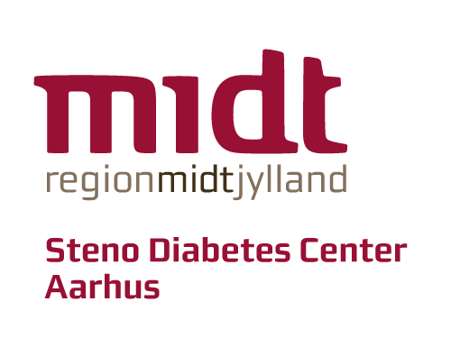

Mere om projektet
Alle praktiserende læger i Region Midt inviteres til at deltage.
- Voksne med type 2-diabetes, som følges hos egen læge, OG som nedenstående kriterier
- Nyrefunktion, eGFR > 59 ml/min/1,73 m²
- Langtidsblodsukker, HbA1c: < 48 mmol/mol, eller 48–53 mmol/mol hvis det individuelle mål for langtidsblodsukkeret er < 53 mmol/mol.
- Albumin/kreatinin ratio, UACR:< 30 mg/g eller 30–300 mg/g, hvis deltageren er i behandling med organbeskyttende medicin (SGLT-2i eller GLP-1 agonist OG RAS-blokade med ACE-i eller angiotension II-receptorblokker).
- Nyrefunktion, eGFR > 59 ml/min/1,73 m²
- LDL-kolesterol < 2,6 mmol/L
- Desuden skal den behandligsansvarlige læge eller dennes uddelegrede vurdere, at patienten egner sig digital årskontrol. Fx. kan komorbiditeter eller manglende digitale eller sproglige evner betyde, at patienten ikke vurderes egnet.
- Gravide kan ikke deltage.
Ved deltagelse i projektet skal almen praksis:
- Identificere potentielle deltagere som opfylder inklusionskriterierne. Dette gøres vha. forløbsoverblikket og journalen. Læs mere under “Identifikation og rekruttering af deltagere”.
- Sende besked til egnede deltager, afgive telefonisk information om projektet, sende besked med link til samtykke.
- Afholde den næste diabetes årskontrol som en digital årskontrol.
- Indsende oplysninger om deltagere til projektet(blodtryk, rygestaus, diabetes debutår, vægt).
Hvad får klinikken ud af at deltage?
- Mulighed for at gennemgå og systematisere forløbene for jeres patienter med type 2-diabetes.
- Bidrager med viden om evidensbaseret differentiering af personer med type 2-diabetes og implementering af digitale tilbud.
- Honorar: Per deltagende patient svarerende til én times vedgået arbejdstid i hht. til gældende PLO takst. Udbetaltes i to tempi. Deltaljer fremgår af Samarbejdsaftalen, som findes under bilag.
Alle praksisser i Region Midtjylland. inviteres til at deltage. Målet er deltagelse fra cirka 25 almen praksis klinikker og cirka 600 patienter med type 2-diabetes. Hvis interessen for deltagelse bliver væsentligt større end studiets kapacitet vil projektet se sig nødsaget til at lukke for tilmeldinger.
Vi har tilmeldt os. Hva’så?
- Almen praksis anvender Patientlisten i Forløbsoverblikket til identifikation af patienter som opfylder de “hårde” paraklinikse inklusionskriterier (HbA1c, eGFR, UACR, LDL). Fremgår under “Hvilke patienter kan deltage”.
- Ved opslag i journalen eller udfra det generelle kendskab til vurderes, om patienten er egnet til digital årskontrol. Vurdering af comorbiditet, samt digitale og sproglige evner. Er der forhold som gør patienten uegnet? Der er ikke fastsat bestemt tilstande eller komorbiditeter, som gør pateinten uegnet. Det er en individuel afgørelse af behandleren.
- Trin 1. Besked i Min Læge-appen med forespørgsel om deltagelse til patienten, som opfylder inklusionskriterierne og er fundet egnet. (bilag 3).
- Trin 2. Mundtligt deltagerinformation givet telefonisk eller ved fremmøde, hvis patienten af anden årsag er i klinikken, hvor der er tid og mulighed til afgivelse af mundtlig information (bilag 2).
- Trin 3. Besked i Min Læge-appen med link til samtykke (bilag 4).
- Rekrutteringsprocessen er udførligt beskrevet i “Procedure for mundtlig deltagerinformation” (bilag 2) under fanen bilag.
Samtykke registreres direkte hos Steno Diabetes Center Aarhus og opbevares dér. Oplysning om deltagers samtykke videregives til almen praksis via e-Boks.
Efter rektruttering og indhentet samtykke vil deltagerens kommende årskontrol for type 2-diabetes blive gennemført digitalt. Deltageren møder som vanligt til blod- og urinprøve, men måler selv blodtryk (og eventuelt vægt), indsender oplysninger om rygning, motion og alkohol og besvarer et spørgeskema, der screener for senkomplikationer, og som også giver patienten mulighed for at ønske en samtale om sin diabetes. Når alle oplysninger er modtaget, vurderer deltagerens vanlige behandler prøvesvarene og spørgeskemaet, og sender svar på resultaterne til deltageren via Min Læge-app. Hvis der findes forhold, som kræver behandlingstiltag, er det op til den ansvarlige behandler at vurdere, om dette kan gøres over mail eller telefon eller kræver, at deltageren bestiller en tid. Deltagerens diabetes årskontrol det efterfølgende år, er igen en standard årskontrol med fysisk fremmøde. Der tages i forsøget ingen ekstra blodprøver eller udføres yderligere undersøgelser ud over dem, deltageren normalt får i forbindelse med en diabetes årskontrol. Det eneste, der ændres, er måden, deltageren og behandleren kommunikerer ved årskontrollen. I hele perioden skal deltageren i øvrigt kontakte sin læge, fuldstændigt som de plejer.
